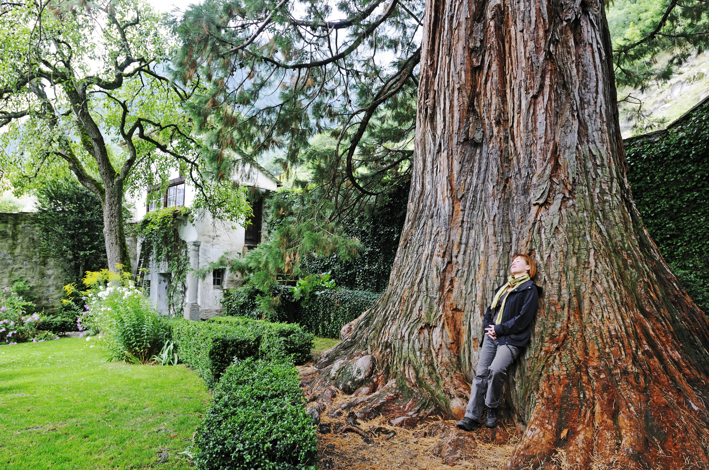
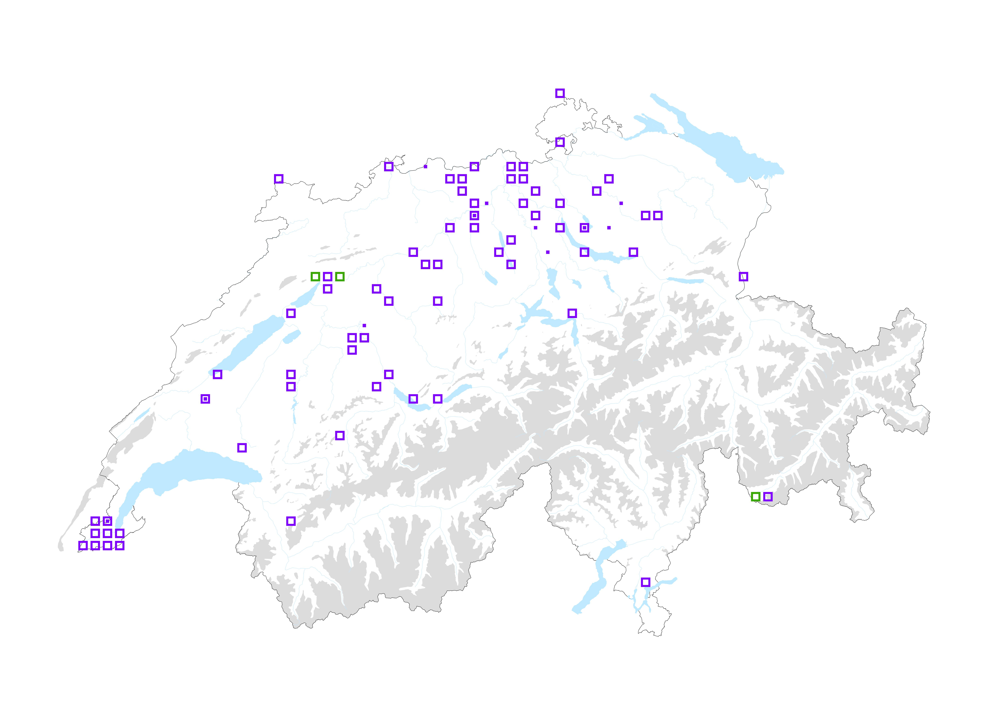

The death of sequoias in Switzerland
From California to Geneva, the story of a former parks giant, now a heartbreaker.

In Switzerland, you can easily find geant sequoias in the city centers. But unfortunately, they are not in good health. After thousands of Swiss francs were spent trying to save one especially, he was sadly cut down a couple of years ago in front of my office (the Tamedia headquarters in Lausanne). An artist created a sculpture from the wood and I think of it every day when I walk by.
When I began this project, I assumed there were only a handful of these giants. Then I looked for data sets and discovered that there were actually thousands of sequoia trees across Switzerland! As shown in the map below, they are not found in forests or Alpine part of Switzerland, instead, they are concentrated in cities and across the Plateau (flat part of the country).

These trees shared the planet with the dinosaurs during the Triassic period (200 millions years ago). They can live for 3000 years in California but only a century in Switzerland - and the situation is likely to worsen with climate change. They suffer from drought and are currently facing a new threat: a fungal disease, which is particularly prevalent in Geneva and Neuchatel.
On the website of the city of Geneva, Claire Méjean, a landscape architect and garden historian for the city’s green spaces department, explains:
- «Sequoiadendron giganteum are plants native to the United States, particularly the Sierra Nevada. The climate of their region of origin is quite humid thanks to mountains that block clouds coming from the ocean. The Sequoiadendron giganteum does not find this climate in Geneva, especially with the extreme heat we have experienced due to climate change over the past several years. Weakened by an unsuitable climate, the trees are then attacked by a fungus that causes a bark canker, leading to their decline. Sequoias sempervirens, which grows spontaneously at lower altitudes, is currently better able to withstand climate change. Thus, the City of Geneva no longer replants Sequoiadendron giganteum but instead chooses Sequoia sempervirens or other large ornamental conifers.»
In the mid-19th century, wealthy individuals and patrons imported sequoias from overseas to adorn their private parks, as a sign of their opulence. These trees are now certainly majestic, but sadly, they are set to disappear and will no longer be cultivated under our latitude. This is not necessarily a loss, as they are not vital for our ecosystem. However, some people - myself included - have a sentimental attachment to these old-timers and respect for their longevity (they were raised before the Eiffel Tower!).